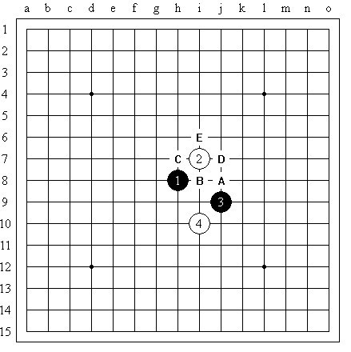
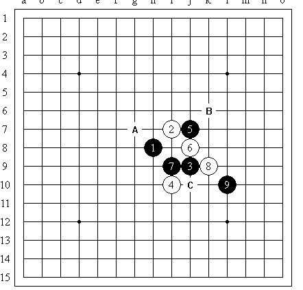
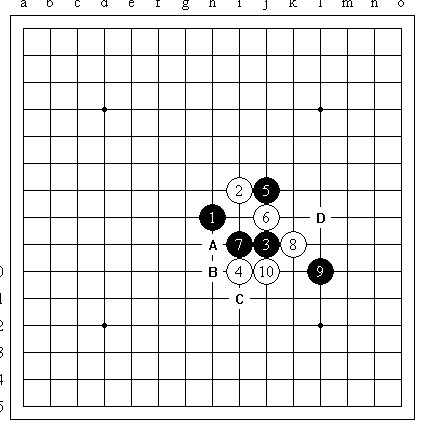
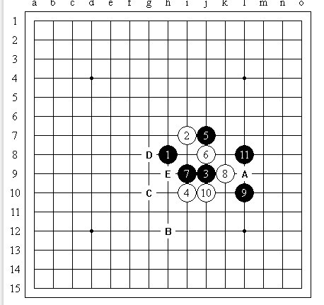
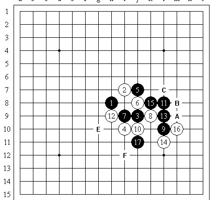
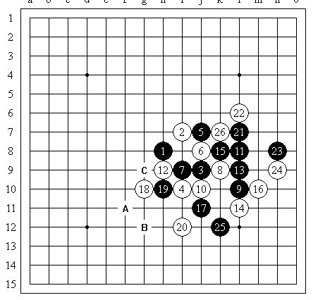
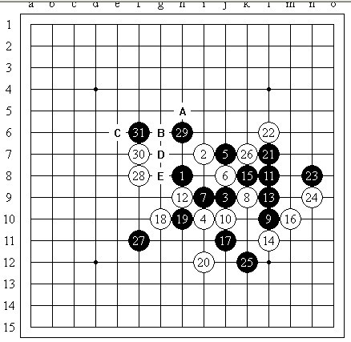
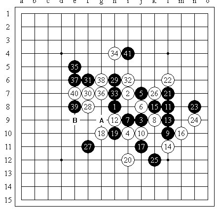

【棋评】简评ORC上旁观的一局
#1 【棋评】简评ORC上旁观的一局作者：茗弈小水滴 发表时间：2012-4-6 15:55:52
水月局，要求五打如图

图一
实战中白棋留了D点，对于开局我也不太清楚，不知道是不是定式，但是看上去应该还有的走，9手之后白棋停顿了一会儿，这个时候白棋会走哪呢？

图二
看来，C点显而易见，但是没必要急着走。白棋是不是还可以走在A点或是B点呢？B点的话，黑棋如果向下活三，那白棋应该就只能挡下，之后黑棋会不会不管白棋在左边做出对攻的一手呢？这样局面是不是会非常复杂，白棋很难控制局面了呢？如果走A点的话，黑棋就算不在右下攻，在上面盖掉h6，那白棋是不是还是要塞到h7，那黑棋再把f7盖住，白棋会不会比较压抑？如果先冲掉h6再走A点呢？这样似乎后面也没有什么好棋。如果现在白棋走C点的话，那么白棋应该比较讨厌黑棋接下去占h10，但是可以发现如果黑棋去占h10，白棋上面可以有很多进攻，黑棋也不好反，就算白棋攻不出，黑棋强防过后，白棋还是会多很多反向的进攻材料出来，而且左边黑棋也没有棋，这样黑棋就劣势，那么就不用担心这种情况；如果黑棋挡住l8的话，黑棋左边空间空间有点少，白棋可能就可以不管黑棋了，那这样黑棋接下来就会比较难选择。
之后白棋果然是走了C点，那现在黑棋面临重要的选择。

图三
这时候黑棋要仔细多算几个点了，目前似乎是要挡斜活二最好了，那是挡上还是挡下呢？似乎都可以哈。实战里黑棋选择比较积极的的D点，因为这样黑棋就算右边攻不出来，但也可以有一些材料。

图四
白棋现在的可选的方案就比较多了，可以选择跳三、做一手等，但是要进攻下去的话，总会让黑棋有一些反击出来，白棋没有必要先消耗掉自己的进攻材料，直接在E点一做，黑棋在右边、左边都不好走，白棋也很安全；但是现在黑棋能在进攻，到底能不能VCT呢？这样白棋要走E点的话，这些在走之前都要算清楚。

图五
实战里面白棋后面果然是走了E点，黑棋如果在左边单纯来防守的话会不会有点亏？倒不如先在左边攻一下，因为白棋防守过后，白棋没多出什么棋，而黑棋已经有了一些进攻材料，虽然不能连攻胜，但是这样再往左边防或是怎么走，情况就要比之前好多了。16手可不可以上挡呢？这里应该是不可以的，因为如果16手挡在上面，黑棋做在A点或B点就可以做一套连续冲四胜，而且黑棋后面还可以继续进攻，这样白棋应该就防不住了，所以14、16手都只能跟住黑棋的活三。
白棋现在要怎么走呢？往右边去防一手也没问题，直接E点跳三也行，因为就算黑棋反活三，白棋再往B点走，白棋也不危险。那么可不可以走在F点呢？如果走F点，黑棋现在可以在右边做连续冲四胜，白棋如果随意防，黑棋就可以继续连攻了，那这样能不能胜呢？像这里就应该非常仔细地算，但是实战白棋很快就走了E点活三，之后黑棋塞中间，然后白棋走F点。

图六
我觉得这里白棋20手有点危险，黑棋要攻击的手段比较多，你这么快就算清楚了么？实际上这里黑棋可以取胜，但是黑棋没走出来（23手走n7，黑棋就可以胜了，因为这样白棋没法再用活三来破坏黑棋的棋形了）。实战26手过后黑棋要进攻就很难了，至少我是想不出什么好手段，而且如果硬要往上面走的话，可能就会越走越糟，最后大概会被白棋围住，黑棋就彻底绝望了。实战黑棋应该也是这么想的（局后我让黑石走27手，黑石给了j5，这里黑棋后面还有比较强的进攻，不过要走出27=j5这一手真的需要非常强的计算力，后续手段都要想好才行啊，因为这里分支太多了，反正我现在是做不到），现在下方B点是一个要点，似乎占住B点之后下方白棋就攻不出来了，但是白棋还可以往上面寻求更多连接，那么C点可不可以呢？好像C点以后白棋也不能连攻胜吧，黑棋还能有些反击。实战这里这里选择了简单一点的方法直接占A点，压缩白棋的空间，看你白棋进攻能力如何。

图七
31之后局面便混乱了，这里应该是双方最担心出错的地方，这里白棋怎么走呢？站住A点的话好像黑棋就彻底防住了，但是黑棋如果和白棋交换一下左边的材料，是不是白棋的优势就不明显了？选择B点呢，黑棋似乎还有些抵抗。但是现在黑棋在做杀，白棋又不得不管黑棋，那要不要冲掉C点再做选择呢？这种情况下，一般不要轻易的去先消耗自己的进攻材料，这样做的结果往往是让自己亏损。这里白棋会给怎么样的交换手段呢？

图八
实战的32、33，在我看来
#2 Re:【棋评】简评ORC上旁观的一局作者：茗弈宽容 发表时间：2012-4-6 16:09:49
 臭小子这2天去哪了啊！快快回来！！！
臭小子这2天去哪了啊！快快回来！！！#3 Re:【棋评】简评ORC上旁观的一局作者：五步之道 发表时间：2012-4-6 18:39:17
看的有点麻烦 图和字不能一起吗#4 Re:【棋评】简评ORC上旁观的一局作者：茗弈宽容 发表时间：2012-4-7 11:45:43
 已更正图片。
已更正图片。